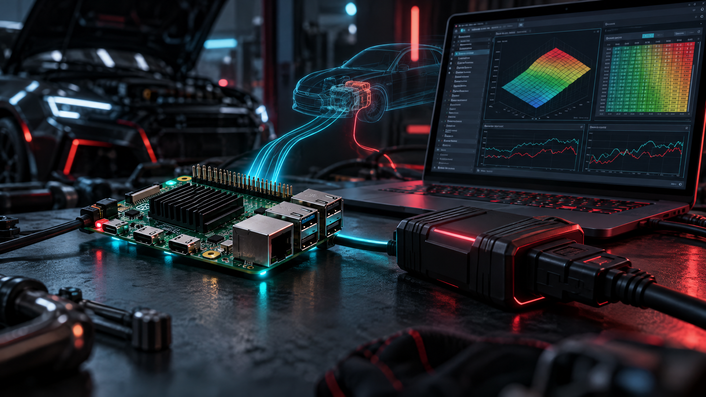
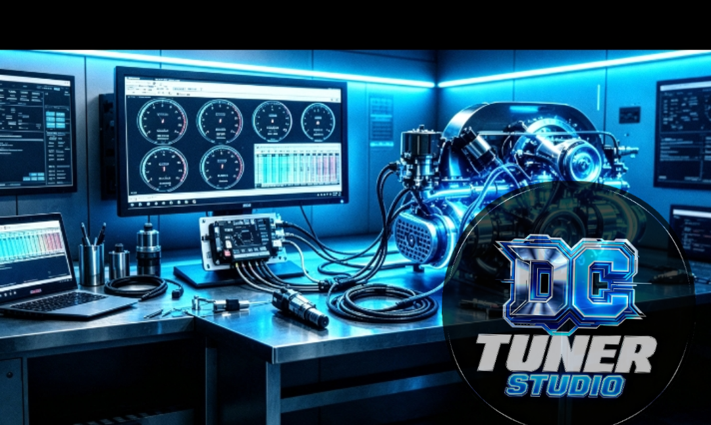
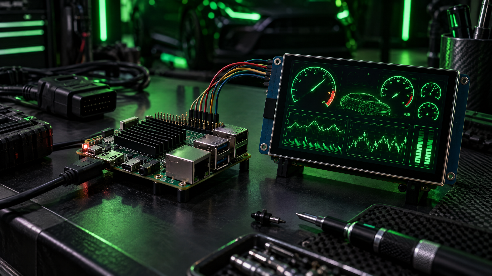

ECU TOOL · RASPBERRY PI
DCstudioRPI
Una edición de DCtuneRstudio preparada para convertir una Raspberry Pi en una estación compacta de diagnóstico y sintonización ECU. Conecta tu interfaz, abre tus mapas y trabaja con una herramienta pensada para equipos ARM de bajo consumo.
DCtuneRstudio // Raspberry Pi edition

Visuales // Raspberry Pi + DCtuneRPI
Una estación compacta de diagnóstico, sintonización y telemetría: Raspberry Pi, pantalla SPI de 3.5 pulgadas y la familia visual de DCtuneRstudio.




Descarga directa
Elige el paquete según la arquitectura de tu Raspberry Pi. Los archivos se sirven directamente desde el repositorio oficial de DCtuneRstudio.
Familia DCtuneRstudio
Explora las demás tarjetas relacionadas con diagnóstico, telemetría y sintonización automotriz dentro de DC Laboratory.
DCtuneRstudio
Edición principal para PC, Windows, Linux, macOS, Raspberry Pi y navegador.
Abrir página y descargas ↗DC Tuner Studio #1
Diagnóstico y sintonización automotriz con visualización y ajuste de datos del vehículo.
Abrir página del producto ↗DC studio Red
Clon mejorado de TunerStudio MS, multiplataforma y sin dependencias externas.
Ver página y descargas ↗DC studio Blue
Telemetría, ajuste ECU, sensores, gráficas y mapas para Speeduino, MegaSquirt y ELM327.
Abrir página del producto ↗DCstudioRPI forma parte de la familia DC Laboratory. Para soporte, versiones y código fuente consulta el repositorio oficial de DCtuneRstudio ↗.